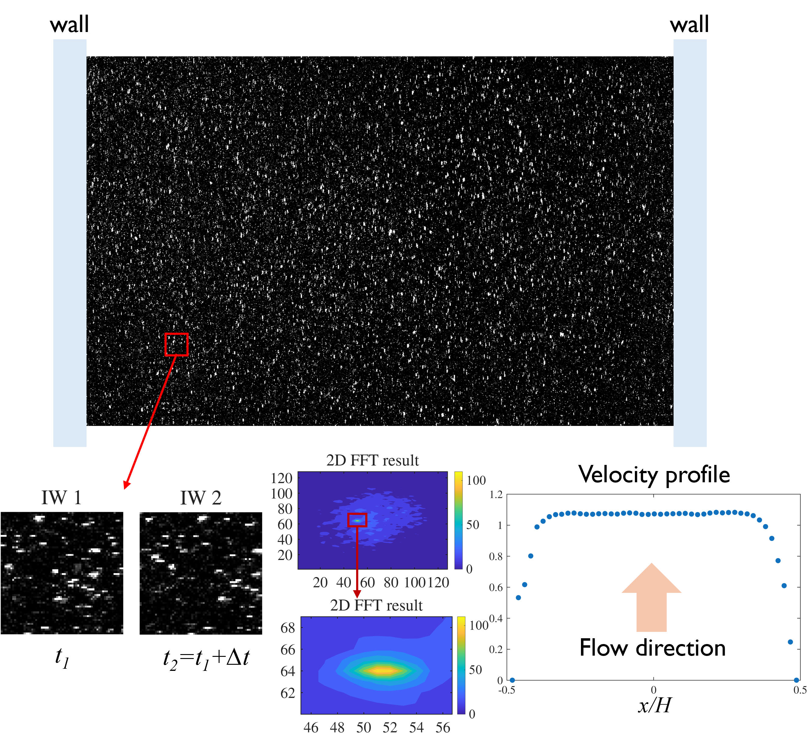
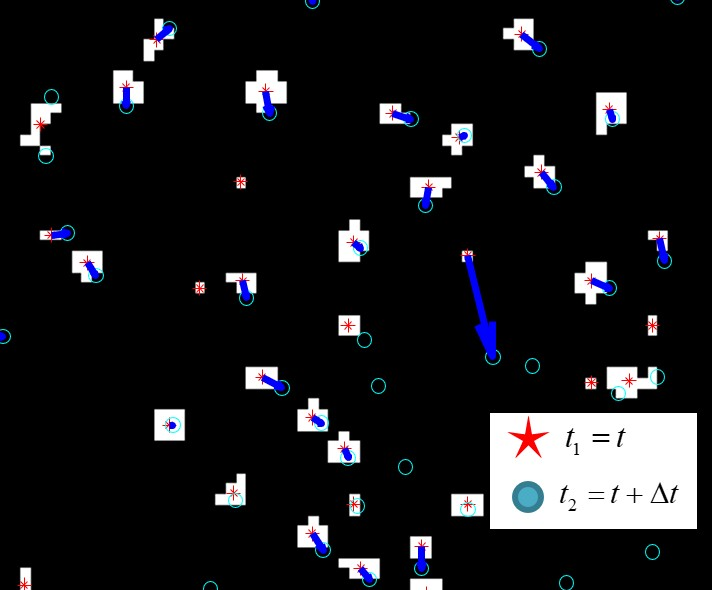
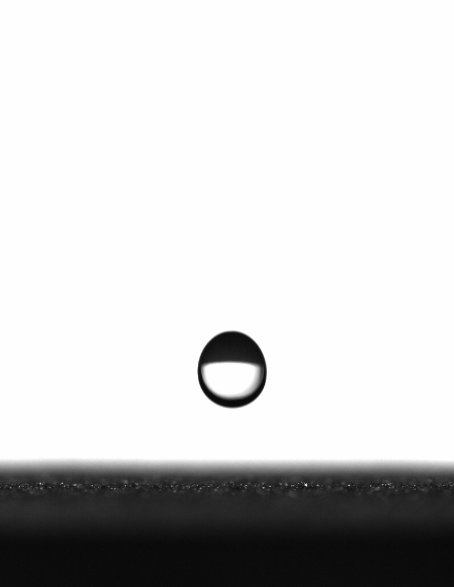
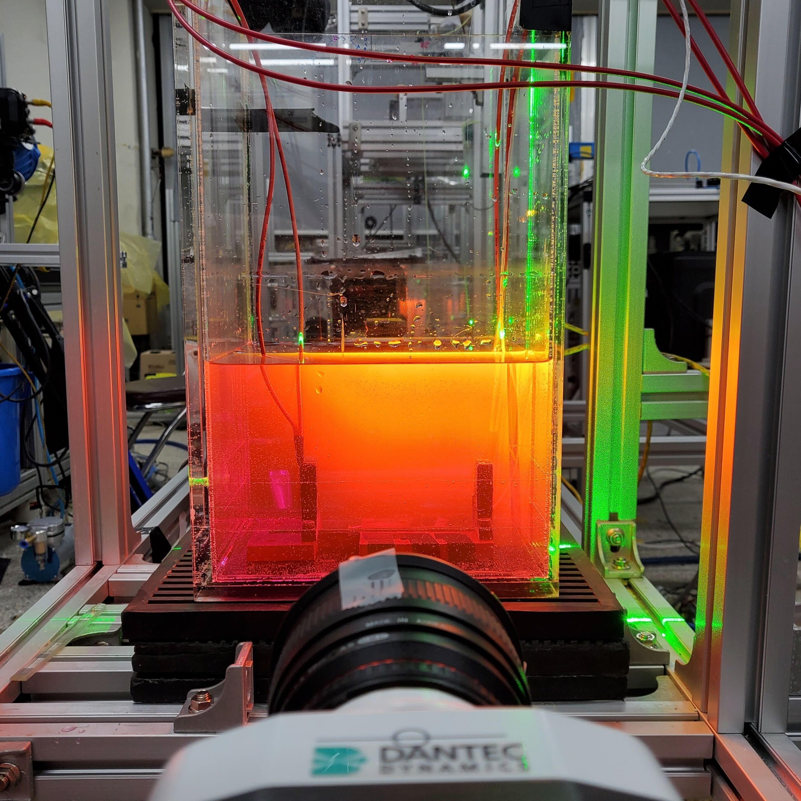
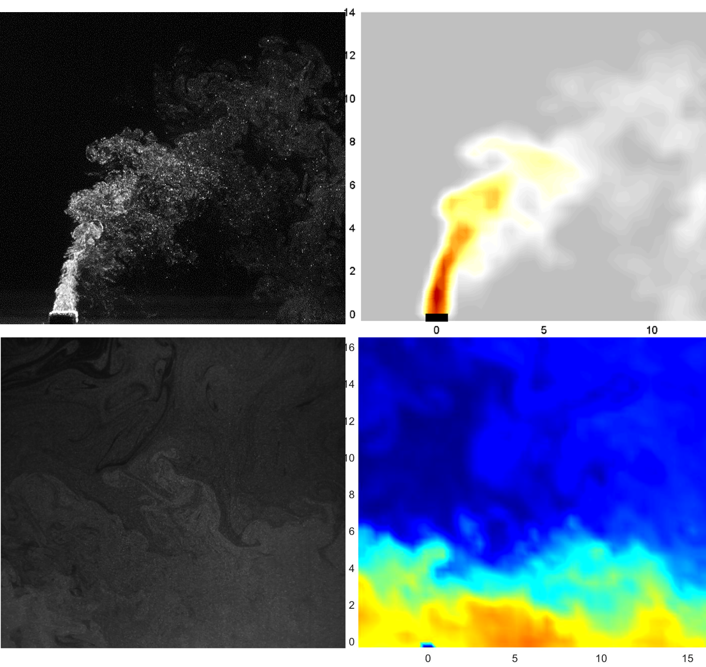
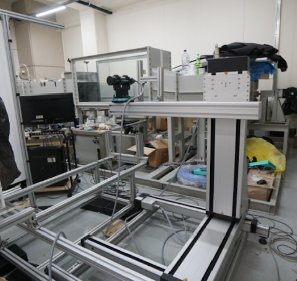
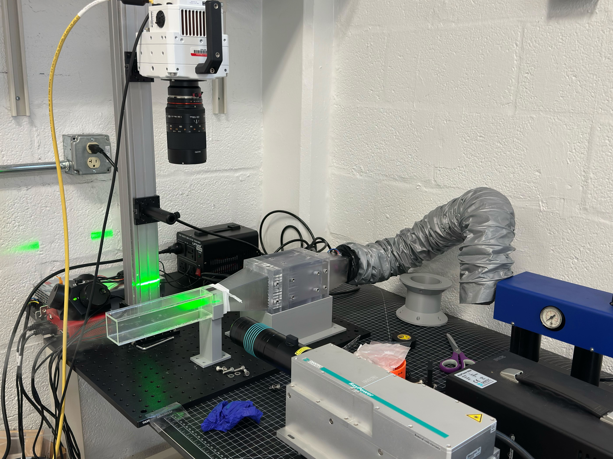
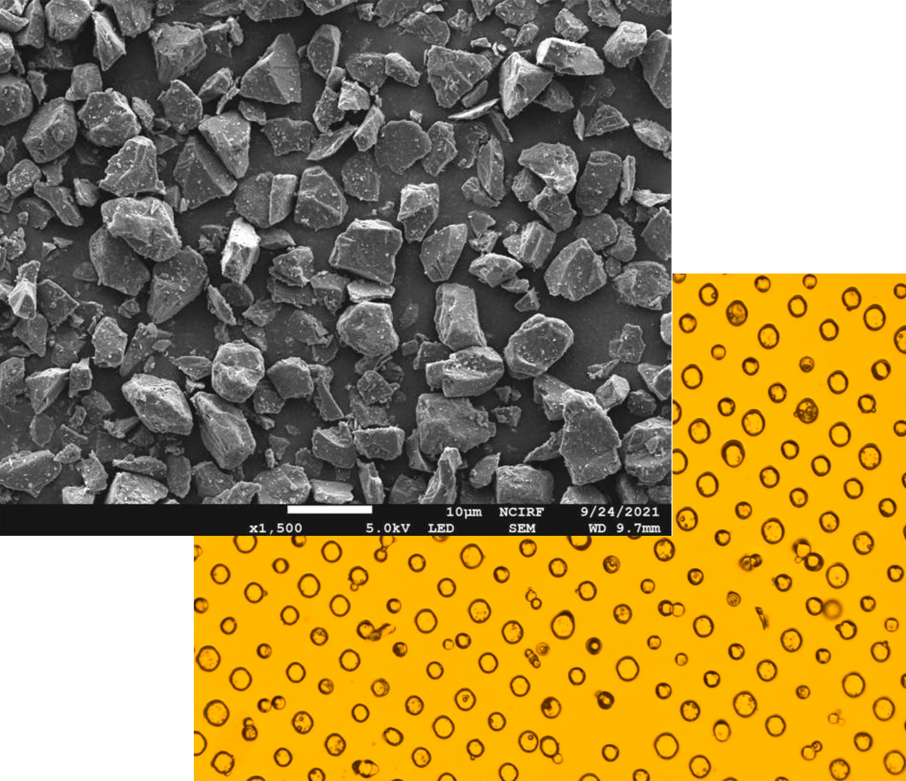

PIV
Particle image velocimetry for resolving instantaneous and time-averaged velocity fields in particle-laden and multiphase flows. Experience includes experimental setup, image acquisition, calibration, and post-processing.

Particle image velocimetry for resolving instantaneous and time-averaged velocity fields in particle-laden and multiphase flows. Experience includes experimental setup, image acquisition, calibration, and post-processing.

Particle tracking velocimetry for measuring individual particle trajectories, dispersion, and transport. Used for dilute particle systems where Lagrangian motion and source tracking are important.

Backlit imaging for droplets, particles, bubbles, and impact dynamics. Used to quantify size, shape, interface motion, and transient deformation in high-speed experiments.

Laser-induced fluorescence for scalar-field visualization and quantitative imaging. Applied to flow diagnostics involving concentration, mixing, temperature, or phase distribution.

Planar light-sheet imaging for mapping particle concentration and spatial distribution. Useful for visualizing aerosol, suspension, and particle-laden flow structures.

Laser Doppler velocimetry for pointwise velocity measurements with high temporal resolution. Used for validating flow speeds and characterizing local flow dynamics.

Design and construction of wind-tunnel for controlled laboratory experiments. Experience includes flow conditioning, test-section design, and optical-access planning.

Microscopy-based characterization of particles, surfaces, granular materials, and deposits. Used to connect microstructure, morphology, and material response across scales.